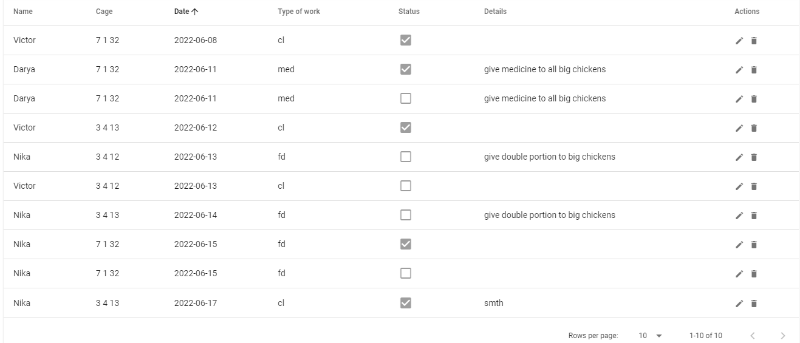
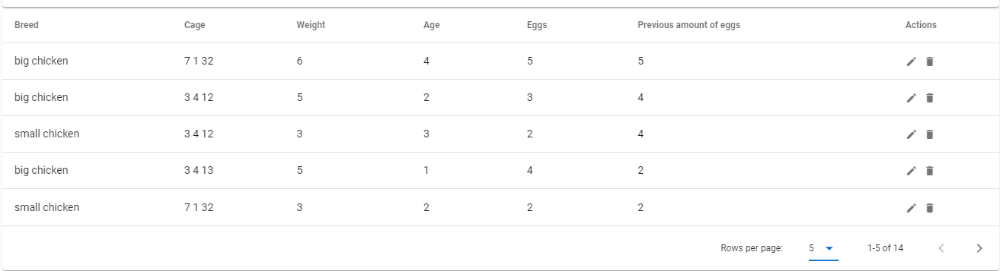
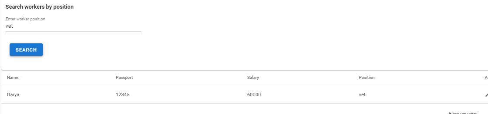
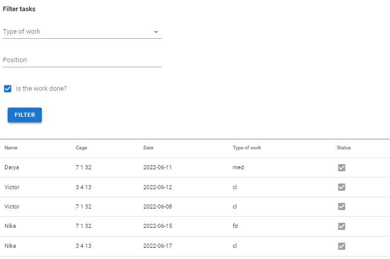
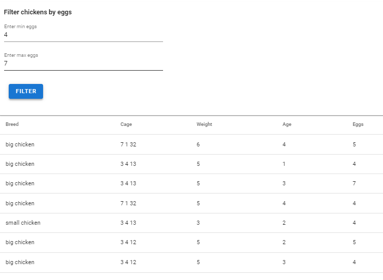

4.1 Адаптация интерфейсов vue.js
Задание 4.1
Необходимо реализовать интерфейс списков объектов, в котором подключить фильтры из второй лабораторной. В интерфейсе должен быть обеспечен следующий функционал:
- сортировка объектов.
- пагинация.
- поиск по объектам.
- фильтрация с чекбоксами.
- фильтры на диапазон.
Сортировка объектов
Сортировка по датам создания задач(также возможна и по другим полям) 
Пагинация
Переключение между страницами и изменение количества объектов на странице 
Поиск по объектам
Поиск работников по должности 
Фильтрация с чекбоксами
Фильтр по статусу задачи(также можно фильтровать по типу работы и должности работника, назначенного выполнять задачу) 
Фильтры на диапазон
Фильтр куриц по заданному диапазону количества снесённых ими яиц 